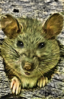

Geomantic Sorcerer Kit
A Gibberlings Three Mod
Author: Caedwyr
On the web: Home page, discussion forum, Discord, and preview gallery
Version 8
Languages: English, French, Spanish
Platforms: Windows, macOS, Linux
The Geomantic Sorcerer Kit is strongly based on the Druidic Sorcerer Kit by Constant Gaw, and resurrected by hlidskialf and loosely based on the Geomancer prestige class from the AD&D 3rd Edition Masters of the Wild manual. The kit combines the sorcerer's spellcasting methods and spells with additional druidic spells and abilities and features its own unique tiered HLA progression and custom spells.
On the Enhanced Editions of the games, the kit will appear during character generation as a sorcerer kit. For original BG2 (including BGT and Tutu), due to the limitations of the kit selection interface the kit is not selectable at character creation, but if the player meets the kit requirements Aataqah the genie at the start of Chateau Irenicus might see fit to help the player remember their abilities as a geomantic sorcerer. See the kit description below for more details.
The mod package also has the option to install an enhancement that lets the player select a portrait for their Geomantic Sorcerer as well as portraits for all of their basic druidic shape change animal forms: bear, cat, dog, leopard, moose, panther, rat, snake, and wolf.
It is recommended that any previous versions of the Geomantic Sorcerer Kit be uninstalled prior to installing a new version. This kit should be installable at any point in mod installation without conflicts.
Enhanced Edition games support sorcerer kits, so you can select the kit at character creation.
For original Baldur's Gate II, the mod currently requires that the player start a new game in the Shadows of Amn segment, although future versions will allow a player to start in Throne of Bhaal or Candlekeep for BGT and Tutu games. This mod should be compatible with other WeiDU mods.
The kit may be applied at any time in Tutu, BGT and Throne of Bhaal games by using the CLUAConsole to create the item CA#AGEO.itm and using the item from the the protagonist's inventory. This method will only work for giving the kit to the protagonist and will not work for assigning the kit to a NPC. This is a temporary feature until I can code some proper dialog to apply the kit at other times in the game.
When selecting a kit at character creation, the original BG2 is hardcoded to display only nine choices. You can install more than nine kits, but only the first nine installed will be offered as selections. If kits from other mods are installed, please be aware of this limitation. The extra kits will be available if they are assigned to enemies, but unavailable for character creation.
Players wishing to assign the kit to a NPC are advised to use the Level 1 NPCs mod. Please note that players should not install the Portraits for Druidic Shapeshifting component if they wish to assign the kit to a NPC.
If you should encounter any bugs, please report them to the authors at the Miscellaneous Released Mods forum.
First time installing a mod? Check out G3's comprehensive tutorial: A New Player's Guide to Installing and Playing Mods.
Special Note for Siege of Dragonspear from Steam/GOG
Good Old Games (GOG) and Steam both package the additional content for Siege of Dragonspear in a method that WeiDU, the tool used to install this mod, cannot access. You must run a program called DLC Merger on your SoD installation before you can install this or any other WeiDU-based mod.
Enhanced Editions Note
The Enhanced Editions are actively supported games. Please note that every patch update will wipe your current mod setup! If in the middle of a modded game you might want to delay the patch update (if possible) as even after reinstalling the mods, you might not be able to continue with your old savegames. Alternatively, copy the whole game's folder into a new one that can be modded and will stay untouched by game patches. It is important that you install the mod to the language version you are playing the game in. Otherwise, the dialogues of the mod will not show but give error messages.
Windows
The Geomantic Sorcerer Kit for Windows is distributed as a self-extracting archive and includes a WeiDU installer. To install, simply double-click the archive and follow the instructions on screen.
Alternatively, the files can be extracted into your game directory using 7zip or WinRAR. When properly extracted, your game directory will contain setup-druidsor.exe and the folder druidsor. To install, double-click setup-druidsor.exe and follow the instructions on screen.
You can run setup-druidsor.exe in your game folder to reinstall, uninstall or otherwise change components.
macOS
The Geomantic Sorcerer Kit for macOS is distributed as a compressed tarball and includes a WeiDU installer.
First, extract the files from the tarball into your game directory. When properly extracted, your game directory will contain setup-druidsor, setup-druidsor.command, and the folder druidsor. To install, double-click setup-druidsor.command and follow the instructions on screen.
You can run setup-druidsor.command in your game folder to reinstall, uninstall or otherwise change components.
Linux
The Geomantic Sorcerer Kit for Linux is distributed as a compressed tarball and does not include a WeiDU installer. Linux users will need to do a one-time install of WeiDU (and a few other adjustments) as described in this great writeup.
To install, run 'WeInstall druidsor in your game folder.
Note for Complete Uninstallation
In addition to the methods above for removing individual components, you can completely uninstall the mod using setup-druidsor --uninstall at the command line to remove all components without wading through prompts.
Each component is separate and optional. The list of components is as follows:
Geomantic Sorcerer
GEOMANTIC SORCERER: The cleric reaches out to a higher power. The wizard trusts only in eldritch tomes. The druid looks to nature for her spells. To the geomantic sorcerer, however, all magic is the same. Geomancy is the art of channeling magical energy from many sources through the land itself. The spells he casts through his connections with the earth are reflections of his own strength of will.
Advantages:
- Learns druid spells in addition to sorcerer spells and casts them from the sorcerer's spellbook.
- At level 8, can shapeshift into new druid animal forms, gains an additional use every 3 levels.
- Can learn high level Quintessence Magic.
Quintessence Magic draws directly upon magic in its basic form, free of intermediaries such as deities, the Weave, or structured spellcasting. It is an inherently intuitive blending of the arcane and the natural forces in the world and cannot be taught or granted.
Disadvantages:
- Has a 15% penalty to experience.
- Strength, Constitution, and Dexterity have a -2 penalty.
- Has a penalty of 1 to casting speed.
Requirements:
- 13 Wisdom, 9 Charisma.
- Must be of any Neutral alignment.
Restrictions:
- Sorcerer Item usage.
- Recognized as a sorcerer.
Portraits for Druidic Shapeshifting
Not available for Enhanced Editions
This component enhances the Geomantic Sorcerer's druidic shapeshifting spell to automatically change the player's portrait whenever they turn into one of the animals. Portraits can be viewed by scrolling down or following this link. Do not install this component if you are planning on assigning the kit to a NPC. Because the Enhanced Editions use a larger default portrait size, this component is not available on these platforms.
New Geomantic Sorcerer Spells
The following are the druidic and priest Spells added to geomantic sorcerer's spellbook. Descriptions for new spells and HLAs can be found below.
Level 1
Cure Light Wounds, Detect Evil, Entangle, Shillelagh, Wave Spray
Level 2
Barkskin, Charm Person or Mammal, Flame Blade, Goodberries, Resist Fire/Cold, Slow Poison
Level 3
Call Lightning, Hold Animal, Protection from Fire, Cure Medium Wounds, Cure Disease, Zone of Sweet Air, Summon Insects
Level 4
Animal Summoning I, Free Action, Neutralize Poison, Protection from Lightning, Call Woodland Beings, Poison
Level 5
Cure Serious Wounds, Animal Summoning II, Iron Skins, Pixie Dust, Insect Plague
Level 6
Cure Critical Wounds, Animal Summoning III, Conjure Animals, Conjure Fire Elemental, Fire Seeds, Dolorous Decay
Level 7
Heal, Conjure Earth Elemental, Sunray, Creeping Doom, Earthquake
Level 8
Nature's Beauty, Fire Storm, Regeneration
Level 9
Tornado, Summon Shambling Mound
Druid Shapeshifting
The geomantic sorcerer also gains a slightly larger set of animal forms:
Bear
A slow moving but powerful Brown Bear. (AC6, THAC0 13, 3 attacks per round-1d6)
Cat
Even this small creature has its uses. If ever in need of nimble movement, the druid can shapeshift into a cat and maneuver through obstacles as if hasted and affected by Free Action. (AC4, THAC0 17, 1 attack per round-1d2)
Dog
The Dog has little place in combat, but does possess great tracking abilities. Its acute senses can easily locate traps and enemies. (AC6, THAC0 16, 1 attack per round-1d4)
Leopard
Although similar to the Panther, the Leopard is a more consistent fighter. It is better suited for fighting in well-lit areas. (AC4, THAC0 12, 2 attacks per round-1d8)
Moose
A Moose can be a very dangerous foe when threatened. Although not the best for direct damage, it can knock opponents unconscious and backwards with its charge. (AC7, THAC0 13, 1 attack per round-1d6)
Panther
A combination of stealth and power. The Panther can use a special stealth attack each round with a 50% chance of success while outdoors. If successful, the panther will be invisible for a short while and will do maximum damage and attack with a +4 bonus to THAC0 for one round. (AC3, THAC0 14, 2 attacks per round-1d8)
Rat
Rats go unnoticed by most and are extremely hard to hit. If the druid is in need for some stealthy movement, they can shapeshift into a rat to avoid detection. (AC16, THAC0 20, 2 attacks per round-1d2, 90% physical resistances, invisibility, non-detection)
Snake
This enormous Snake has a weak bite, but can inject its target with poisonous venom with each hit. Those near it must also make a successful save versus spells with a +4 bonus or flee in terror. (AC4, THAC0 15, 1 attack per round-1d4)
Wolf
The Wolf is not a particularly powerful attacker. It compensates, however, by being able to call in a pack of wolves (1-5 wolves, once per day) for 30 minutes, if outdoors. (AC3, THAC0 15, 1 attack per round-1d8)
High Level Abilities
The geomantic sorcerer has a tiered HLA table with four paths and quintessence magic spells at the pinacle of each path.
Spell Casting Proficiency Path
Clarity (TIER 1 ABILITY)
With this ability, the geomantic sorcerer becomes immune to deafness, silence, miscast magic, feeblemind, and charm.
Vocal Lucidity (TIER 2 ABILITY)
Requires: Clarity
The geomantic sorcerer, having learned to deliver the vocal components of spells with greater efficiency, is now able to reduce all spell casting times by 2.
Spellcasting Mastery (TIER 3 ABILITY)
Requires: Vocal Lucidity
Your devotion to improving your spellcrafting has paid off. With this ability, all spells cast by you will have twice the duration as normal. Additionally, you are able detect dispellable magic in your immediate area at will once per round.
Union of Magic (TIER 4 ABILITY)
Requires: Spell Casting Mastery
(Quintessence Magic)
School: Any School
Duration: Instantaneous
Casting Time: 6
Area of Effect: 60-foot radius
Saving Throw: None
This powerful spell sends out a 360 degree shockwave, causing everyone within its radius to become vulnerable to magic in all its forms, whether it be weaponry or spellcraft. All magical defense spells are eradicated, magical damage resistance is made nonexistent, magic resistance is lowered to nothing for 20 rounds, and all dispellable magics are removed.
Arcane Knowledge Path
Bonus Spell Memorization (TIER 1 ABILITY)
Selecting this ability allows the magic-user to cast one extra spell per level.
Bonus Spell Knowledge (TIER 2 ABILITY)
Requires: Bonus Spell Memorization
With your increased understanding of magic, you are now able to learn new priest spells previously not given to druids. The new spells are:
- Level 1: Sanctuary
- Level 2: Silence, 15' Radius
- Level 3: Remove Paralysis
- Level 4: Defensive Harmony
- Level 5: Chaotic Commands
- Level 6: Greater Command
- Level 7: Physical Mirror
- Level 8: Shield of the Archons
- Level 9: Raise Dead
Spell Enhancement (TIER 3 ABILITY)
Requires: Bonus Spell Knowledge
Your greater understanding of all magical forces allows you to cast improved versions of several wizard spells. By selecting this ability, you may cast the following spells:
- Mordenkainen's Multiplicative Magic Missile
- Controlled Web
- Improved Ghost Armor
- Otiluke's Consistently Resilient Sphere
- Cone of Freezing Cold
- Major Globe of Invulnerability
- Delayed Blast Explosion
- Immunity to Energy
Essence of the Planes (TIER 4 ABILITY)
Requires: Spell Enhancement
(Quintessence Magic)
School: Any School
Range: Visual range of caster
Duration: 20 rounds
Casting Time: 9
Area of Effect: Special
Saving Throw: None
This spell summons an Orb of Pure Energy for 20 rounds. This Orb has many abilities, both offensive and defensive, and its mere proximity to both friend and foe has significant effect. The caster can shape its energy into many different uses, but must remain within visual distance to maintain control.
Close proximity to the orb will result in the following effects, occurring once each round:
Enemies:
Horror, Blindness, Ray of Enfeeblement, Remove Magic, Secret Word, Hold Monster, Miscast Magic.
All of these spells are cast identically to their wizard-spell counterparts as though the Orb were a 25th level wizard. In addition, all creatures of 8 hit dice or lower are instantly slain, as per the 6th level wizard spell, Death Spell.
Allies:
All friendly creatures slowly regenerate when near the Orb. In addition, they gain a bonus of 1 to their casting speed, a +1 bonus to all stats, a bonus of 1 to all saving throws, and a bonus of 1 to their speed factor.
The Orb is able to cast the following spells:
Elemental Phasing (four times per day)
The Orb selects a target and sends 10 magical orbs flying at it. Each of these orbs, upon hitting the target, will phase the victim briefly into one of the 4 elemental planes for a split second before bringing them back. These short forays will result in a small amount of elemental damage (1d2), although at the end of the journey there is a 20% chance that the target will be level drained (5 levels), feebleminded (4 rounds), or stunned (4 rounds) from the shock of travel. There is a 5% chance that the victim will not be able to withstand the shock and will die instantly.
Energy Shockwave (four times per day)
This spell sends all enemies near the orb flying backwards, dealing 1d20 points of damage and slowing their movement rate by 75% for 1 round.
Energy Exchange (four times per day)
All enemies within the selected radius will be struck by lightning bolts, each dealing 5d5 points of damage.
Ball Electricity (twenty times per day)
This is the Orb's basic attack which deals 3d6 points of electrical damage and 3d6 points of crushing damage to a single target.
Magical Defense Path:
Immunity to Level 1 Spells (TIER 1 ABILITY)
This ability confers upon the geomantic sorcerer complete invulnerability to all level 1 spells.
Magic Resistance (TIER 2 ABILITY)
Requires: Immunity to Level 1 Spells
By selecting this ability, the geomantic sorcerer will gain an additional 33% magic resistance.
Blessing of Nature (TIER 3 ABILITY)
Requires: Magic Resistance
High-level geomantic sorcerers maintain a closer link to Nature herself. This provides a stronger connection to the powers of Water, Fire and Air which grant the geomantic sorcerer a permanent +1 bonus to Wisdom and 10% bonuses to Fire, Cold, and Lightning resistances.
Arcane Futility (TIER 4 ABILITY)
Requires: Blessing of Nature
(Quintessence Magic)
School: Any School
Duration: 5 rounds
Casting Time: 1
Area of Effect: Self
Saving Throw: None
With this spell, the caster encases himself within a shell that prevents all magical energy from entering for a short time, regardless of its form. For 5 rounds, the caster gains complete immunity to magical damage, direct magical effects, and magical weaponry. In addition, it grants the player 100% magic resistance and immunity to timestop. Because of the power of the spell, all magical effects on the caster are dispelled upon casting, but for the duration of the spell the player is free to cast spells both within and outside of the shell.
Druidic Powers Path
Druid Immunities (TIER 1 ABILITY)
As a high level druid, you are immune to all forms of poison, disease, and level drain. Non-magical weapons have no effect upon you, and you cannot be forcefully put to sleep. In addition, you gain an additional 25% resistance to fire, electricity, cold, and acid.
Elemental Transformation (TIER 2 ABILITY)
Requires: Druidic Immunities
With this ability, the geomantic sorcerer will now be able to shapeshift into a 24 HD elemental of fire, air, earth, or water. These elemental forms have different strengths and weaknesses according to their nature. When the druid returns to human form, he is also healed 3d10 damage. The ability lasts 5 turns, or until the druid decides during the duration of the ability.
Earthly Planeswalking (TIER 3 ABILITY)
Requires: Elemental Transformation
Having mastered the elements, it is now possible for the geomantic sorcerer to meld into any terrestrial environment, moving through the ground or air at will, reappearing anywhere onscreen in human form.
Torrential Cacophony (TIER 4 ABILITY)
Requires: Earthly Planeswalking
(Quintessence Magic)
School: Any School
Range: Visual sight of caster
Duration: 3 rounds
Casting Time: 9
Area of Effect: 45-foot radius
Saving Throw: Special
Harnessing the elemental powers of Air and Water, the geomantic sorcerer is able to unleash an awesome display of magical might. A storm of ice, electricity, and raging winds affecting everyone within a 30 foot radius, this spell is second only to its sibling, Fiery Cataclysm, in pure destructive potential. Although the mage must maintain concentration as he channels the spell and will not be able to move from his location, he will be able to maintain enough control to prevent any damage upon himself or his party.
When cast, a massive lightning bolt comes down and strikes the sorcerer, shrouding him in a field of electrical energy. At the precise moment of the blast, lightning bolts fly out and strike everyone within range, dealing 1d10 points of damage. Overhead, an Ice Storm will rage for 3 rounds. Every 4 seconds (for a total of 5 times), it causes 1d8 points of cold damage. Everyone caught in the storm will either be struck by a massive Lightning Strike, a large Ice Boulder, or be swept up by a small Whirlwind, once every 4 seconds (5 times maximum).
The Lightning Strike does 1d15 points of electrical damage and has a 75% chance of knocking all targets around it backwards.
The Ice Boulder deals 2d10 points of crushing damage and has a 50% chance of preventing its target from vocalizing spells for 2 rounds and a 25% chance of knocking the target unconscious for 2 rounds.
The Whirlwind deals 1d15 points of slashing damage while simultaneously blowing its target back. There is a 25% chance that the target will have his or her weapons blown off.
During this storm, the caster becomes a conduit of electricity and water. Each round, all enemies within the storm will either be struck by a Lightning Bolt, a Smashing Wave of water, or a Cone of Cold.
The Lightning Bolt behaves as a normal lightning bolt and does 1d10 points of electrical damage. There is a 50% chance that the bolt will create an Electrical Arc, which has a 50% chance to jump across all targets within the vicinity. The Electrical Arc deals 1d5 points of electrical damage to everyone it hits.
The Smashing Wave strikes a single individual, dealing 1d20 points of magical cold damage. This wave will wash the target back a good distance and, cause the target to move at half-speed for 2 rounds.
The Cone of Cold affects all enemies in its path, dealing 1d10 points of cold damage. This blast has a 25% chance of freezing its targets for 1 round.
There is no save.
Fiery Cataclysm (TIER 4 ABILITY)
Requires: Earthly Planeswalking
(Quintessence Magic)
School: Any School
Range: Visual sight of caster
Duration: 5 rounds
Casting Time: 9
Area of Effect: 45-foot radius
Saving Throw: Special
A devastating inferno of fire and rock that billows from the sky and grasps from the earth. It is the single most destructive spell available and will harm everything in its path save the caster. Fiery Cataclysm’s power rivals that of the Gods themselves, and has the potential to level small villages, let alone its occupants. The effects of the spell are automatically centered upon the caster for 6 rounds, but unlike other area effect spells, Fiery Cataclysm will move with its caster from round to round.
Once the initial incantation is finished, a massive column of flame will strike the player, encasing him in a globe of fire while sending out a massive explosion that deals out 2d10 points of damage in a 45-foot radius. Everyone caught in the blast will be knocked backwards and will either be struck by a minor fireball for 3d5 points of damage or a ray of flame (2d10 x 2 points of damage, target is pushed back by the flames for 1 round.) Four seconds after the first eruption, another column of flame will pour down, creating an identical explosion. Three seconds later, an additional explosion will erupt. A final explosion will follow five seconds later, and everyone within range will be struck by a another minor fireball.
At the start of the third round of the spell, the sky will begin to rain meteors, causing all within range to take 2d5 points of damage for every round that they are caught in the hail. Each round, every target will be struck by a massive meteor (3d5 points of damage in a 30 foot radius) twice and be blown backwards and possibly knocked unconscious (25% chance, save vs. spells w/ +4 bonus) for 1 round.
By the fifth round, after the last meteor falls, the ground will begin to shake violently for two rounds, throwing all creatures about for 1d10 points of damage each round and causing flaming rifts to open on the ground twice per round, crushing victims for 2d8 points of damage. Each round, the vegetation on the ground will also attempt to grasp at any living creature and hold it rigidly for one round with a 50% success rate.
At the end of the sixth round, a final column of flame will engulf the caster once again, sending out three massive fiery shockwaves that engulf its victims for 2d10 points of damage each.
Descriptions for New Base Spells and Spells Added by HLAs
Cone of Freezing Cold (Evocation)
Level: 5
Range: 0
Duration: Instantaneous
Casting Time: 5
Area of Effect: Special
Saving Throw: 1/2
When this spell is cast, it causes a cone-shaped area of extreme cold, originating at the wizard's hand and extending outward in a cone five feet long and one foot in diameter per level of the caster. It drains heat and causes 20d4 + 10 points of damage, with a save for half damage. Every target that is within the enhanced Cone of Cold's range must make an additional saving throw or be frozen for 1d4 rounds.
Controlled Web (Evocation)
Level: 2
Range: Visual sight of caster
Duration: 1 turn
Casting Time: 2
Area of Effect: Special
Saving Throw: Special
This spell is identical to its original incarnation with the notable exception that it does not affect party members. A web spell creates a many-layered mass of strong, sticky strands similar to spider webs but far larger and tougher. The web spell covers a maximum area of about 30 feet in radius (roughly the same size as a fireball). Creatures caught within webs, or simply touching them, become stuck among the gluey fibers. Anyone in the area when the spell is cast must roll a saving throw vs. spell with a -2 penalty. If the saving throw is successful, then the creature is free to move out of the area. A failed saving throw means the creature is stuck in the webs, unable to move. Each round that a creature remains in the web, he must make a saving throw or be unable to move.
Delayed Blast Explosion (Invocation/Evocation)
Level: 7
Range: Visual range of caster
Duration: Special
Casting Time: 7
Area of Effect: 60' radius
Saving Throw: 3/4
This spell creates a massive fireball that hovers at a point determined by the caster. The fireball will stay in position until someone walks too close to it, at which point it will explode for 15d6 points of damage with a save vs. spell for three-quarters damage. The resulting explosion creates a massive expanding shockwave that stretches out in a 60-foot radius. Its relatively slow expansion gives the caster and his party time to flee.
Immunity to Energy
(Abjuration)
Level: 8
Range: Touch
Duration: 1 round /level
Casting Time: 8
Area of Effect: Creature touched
Saving Throw: None
When the spell is cast it confers 100% immunity against all energy attacks such as fire, cold, acid, magic and electricity whether magical or non-magical such as spells, weapons, wands, breath weapons, etc. This excludes any physical attacks and spell-created weapons, such as Enchanted weapon and Spiritual Hammer. In other words, any physical damage such as piercing, blunt or slashing will get through. This effect lasts for the duration of the spell or until dispelled. Multiple castings of this spell are not cumulative.
Improved Ghost Armor (Conjuration/Summoning)
Level: 3
Range: 0
Duration: 5 turns
Casting Time: 1
Area of Effect: The caster
Saving Throw: None
By means of this spell, the wizard creates a magical field of force that serves as if it were field plate armor (AC 2). It is cumulative with Dexterity and, because of the enhanced nature of this spell, with armor and shield bonuses. The armor spell does not hinder movement, adds no weight or encumbrance, nor does it hinder spellcasting. It lasts until successfully dispelled or until the duration expires.
Major Globe of Invulnerability (Abjuration)
Level: 6
Range: 0
Duration: 1 round/level
Casting Time: 6
Area of Effect: 5-foot-radius sphere
Saving Throw: None
This spell is a more powerful version of Glove of Invulnerability, creating an immobile, faintly shimmering magical sphere around the caster that prevents any 1st-, 2nd-, 3rd- 4th- and 5th-level spell effects from penetrating (i.e., the area of effect of any such spells does not include the area of the globe of invulnerability). This includes innate abilities and effects from devices. However, any type of spell can be cast out of the magical sphere, and these pass from the caster of the globe to their subject without affecting the globe. Sixth and higher level spells are not affected by the globe. The globe can be brought down by a successful dispel magic spell, as well as other forms of magical attack such as Spellstrike and Pierce Magic.
Mordenkainen's Multiplicative Magic Missile (Evocation)
Level: 1
Range: Visual range of caster
Duration: Variable
Casting Time: Variable
Area of Effect: 1 creature
Saving Throw: None
Like the popular wizard spell, Magic Missile, this spell sends out accurate missiles that inflict 1d4+1 points of damage each. Unlike Magic Missile, Mordenkainen's Multiplicative variant increases the possibilities for massive and minimal damage immensely.
A successful casting of this spell only guarantees the creation of a single magic missile, but at every step of the spell there is the possibility of sending additional missiles at your enemy.
1 missile: 100%
+ 2 missiles: 75%
+ 3 missiles: 75%
+ 4 missiles: 66%
+ 5 missiles: 66%
+ 6 missiles: 50%
+ 7 missiles: 50%
+ 8 missiles: 33%
+ 9 missiles: 33%
+ 10 missiles: 25%
+ Restart spell: 25%
It is theoretically possible, if improbable, that this spell can repeat itself an infinite number of times. In any case, the caster must maintain concentration during the process, and thus the possibilities of the spell may be brought to a halt by spell disruption.
Otiluke's Consistently Resilient Sphere (Alteration)
Level: 4
Range: 0
Duration: 1 turn
Casting Time: 4
Area of Effect: Target creature
Saving Throw: None
When this spell is cast, the result is a globe of shimmering force that encloses the subject creature. The resilient sphere will contain its subject for the duration of the spell. The sphere is completely immune to all damage. Actually, the only method of removing the sphere is a successful dispel magic. Hence the creature caught inside the globe is completely safe from all attacks, but at the same time is completely unable to affect the outside world. Unlike the original variant of this spell, this spell cannot be saved against.
Summon Shambling Mound (Conjuration/Summoning)
Level: 9
Range: Visual sight of caster
Duration: 5 hours
Casting Time: 7
Area of Effect: Special
Saving Throw: None
Upon casting, a powerful mound of earth and tree and rock will rise out of the ground. The mound will do the bidding of the caster until it is slain, or the duration of the spell runs out. All of the commands given to the elemental are done telepathically so there is no time lost due to miscommunication, and no need to know the language of the summoned creature.
Tornado (Invocation)
Level: 9
Range: Visual sight of caster
Duration: 5 rounds
Casting Time: 7
Area of Effect: 30-foot radius
Saving Throw: Special
When cast, a whirlwind appears at the selected spot for 5 rounds. Twice per round, all enemies within a 30 foot radius must make a successful saving throw against each of the following possible effects:
Wing Buffet: Save vs. Breath or be blown back a great distance.
Dropped Weapons: Save vs. Breath or have your weapons blown off.
Flying Debris: Save vs. Spells at a +2 bonus or be knocked unconscious by flying debris for 3 rounds.
Strong Winds: Save vs. Breath at a -4 penalty or have one's movement rate slowed to 25% for 1 round.
Twice per round, all victims will take 2d10 points of damage from being slammed into the ground or hit by flying objects. A successful save vs. breath will reduce the damage by half.
Wave Spray (Invocation/Evocation)
Level: 1
Range: Visual range of caster
Duration: Instantaneous
Casting Time: 2
Area of Effect: Target creature
Saving Throw: Special
When the geomantic sorcerer casts this spell, a small wave of water will fly out and strike the target for 1d8 points of damage. The crash of the wave will affect those around it in a 20 foot radius, causing 1 point of damage to each affected creature unless a save vs. spells is made at a +3 bonus.
This section largely owes it's existence to the fine work of Amaurea who was very obliging in transforming 30 different portraits of animals into "Baldurized" versions. In addition to this excellent work, Amaurea was also kind enough to allow me to borrow a number of her more traditional, previously published, humanoid portraits. You can see more of Amaurea's work at her website at http://www.freewebs.com/amaurea62/.
Additionally, Amedyr answered a general request to forum users at The Gibberlings Three and came up with an original interpretation of the Geomantic Sorcerer archetype; thank you Amedyr.
The remaining portraits were collected along my journeys through a multitude of "Baldur's Gate" portrait websites and forums, and as I didn't make note of their artist's at the time I can not give credit directly. I would still offer a thank you to their artists all the same.
Power Users
Advanced users can easily substitute their own portraits for the Geomantic Sorcerer by replacing the following portrait files in their override and portraits directories.
BGII - SoA/portraits
- geosorl.bmp - Humanoid form, large character page portrait at 110x170 pixels
- geosors.bmp - Humanoid form, small sidebar portrait at 38x60 pixels
BGII - SOA/override
- geosorl.bmp - Humanoid form, large character page portrait at 110x170 pixels
- geosors.bmp - Humanoid form, small sidebar portrait at 38x60 pixels
- bearm.bmp - Bear form, large character page portrait at 110x170 pixels
- bears.bmp - Bear form, small character page portrait at 38x60 pixels
- catm.bmp - Cat form, large character page portrait at 110x170 pixels
- cats.bmp - Cat form, small character page portrait at 38x60 pixels
- dogm.bmp - Dog form, large character page portrait at 110x170 pixels
- dogs.bmp - Dog form, small character page portrait at 38x60 pixels
- leopardm.bmp - Leopard form, large character page portrait at 110x170 pixels
- leopards.bmp - Leopard form, small character page portrait at 38x60 pixels
- moosem.bmp - Moose form, large character page portrait at 110x170 pixels
- mooses.bmp - Moose form, small character page portrait at 38x60 pixels
- pantherm.bmp - Panther form, large character page portrait at 110x170 pixels
- panthers.bmp - Panther form, small character page portrait at 38x60 pixels
- ratm.bmp - Rat form, large character page portrait at 110x170 pixels
- rats.bmp - Rat form, small character page portrait at 38x60 pixels
- snakem.bmp - Snake form, large character page portrait at 110x170 pixels
- snakes.bmp - Snake form, small character page portrait at 38x60 pixels
- wolfm.bmp - Wolf form, large character page portrait at 110x170 pixels
- wolfs.bmp - Wolf form, small character page portrait at 38x60 pixels
Male Humanoids
mCast2 (Lightning Caster) |
mCast5 (Blond Hooded Caster) |
mDruid2 (Druid with face paint) - By Amaurea |
mDruid (Druid in Vegetation) |
 mElf1 (Slightly dark skinned elf) |
mElf2 (Elf caster type, open collar) - By Amaurea |
mElf3 (Elf caster type, closeup) - By Amaurea |
mGeo01 (Caster with sigils and runes) - By Amedyr |
Female Humanoids
fCast02 (Green Hooded, possibly elven/half-elven) |
fCast15 (Tattooed caster) |
fCast16 (With metal ornamentation) |
 fCast18 (Brown Hair human/half-elf) |
fDruid7 (Druid with headdress) |
fDruid9 (Red headed druid type in brown robe) |
fHaEl1 (Elf/Half-Elf caster type) - By Amaurea |
 fHaEl2 (White robed half-elf/elf) - By Amaurea |
Bears
oBear1 (Dark Brown looking over shoulder) - By Amaurea |
oBear2 (Lighter Brown with partially open smiling mouth) - By Amaurea |
oBear3 (Serious looking bear) - By Amaurea |
Cats
oCat1 (Yellow and orange mottled with white bib) - By Amaurea |
oCat2 (Grey with black bands around neck) - By Amaurea |
oCat3 (Grey) - By Amaurea |
Dogs
oDog1 (Grey Hound) - By Amaurea |
oDog2 (Beige shaggy haired dog) - By Amaurea |
oDog3 (Border Collie) - By Amaurea, picture of Skye by Caedwyr |
Leopards
oLeop1 (Leopard) - By Amaurea |
oLeop2 (Leopard with snow) - By Amaurea |
oLeop3 (Leopard with tongue) - By Amaurea |
Male Moose
omMoo1 (Moose with head down) - By Amaurea |
omMoo2 (Moose with head in profile) - By Amaurea |
omMoo3 (Chestnut coloured moose) - By Amaurea |
Female Moose
ofMoo1 (Semi-profile perspective) - By Amaurea |
ofMoo2 (Chestnut coloured moose with head down) - By Amaurea |
ofMoo3 (Chestnut coloured moose with head up) - By Amaurea |
Panthers
oPan1 (Shiny black panther) - By Amaurea |
oPan2 (Panther with head cocked to one side) - By Amaurea |
oPan3 (Panther with mouth partially open) - By Amaurea |
Rats
oRat1 (Beige Rat) - By Amaurea |
 oRat2 (Rat sticking head out of hole) - By Amaurea |
oRat3 (Light rat with food) - By Amaurea |
Snakes
oSnak1 (Snake raising head off grass) - By Amaurea |
oSnak2 (Cobra smelling its surroundings) - By Amaurea |
oSnak3 (Cobra with hood partially extended) - By Amaurea |
Wolves
oWolf1 (White wolf) - By Amaurea |
oWolf2 (Grey and white wolf) - By Amaurea |
 oWolf3 (Black Wolf) - By Amaurea |
This mod was created by Caedwyr. You can visit The Gibberlings Three for information on this and any other mods on which he may be working.
- Constant Gaw - The original Druidic Sorcerer kit that inspired this mod and provided quite a few files that were modified.
- hlidskialf - for his work on the Druidic Sorcerer kit
- aVENGER - for the Shambling Mound spell and help with its scripting
- the_bigg - for coding help and permission to use the Elemental Transformation and Nature's Blessing HLAs from Refinements
- Littiz - for the Elemental Transformation and Nature's Blessing HLAs from Refinements
- TGMaestro - for the Elemental Transformation and Nature's Blessing HLAs from Refinements
- CamDawg - For code and coding help
- Avenger - for coding help and explanations of spells and effects
- BigRob - for help with spell icons
- devSin - for coding help
- erik - for coding help
- Gort - for coding help
- igi - for coding help and suggestions
- jastey - for dialogue help
- Kulyok - for dialogue help
- Mike1072 - for proofreading and suggestions on how to implement a sorcerer kit
- Nythun - for how to implement a sorcerer kit, general coding help, and convincing me not to do horrible hacks to the mod
- Rabain - for coding help
- Miloch - for coding help and fun with SUBCOMPONENTS
- plainab - for coding help and fun with SUBCOMPONENTS
- vilkacis - for the cat and snake paperdolls
- Tassadar88 - for the leopard, moose, and panther paper dolls
- Amaurea - for her wonderful job at "Baldurizing" the animal portraits and permission to use select male and female humanoid portraits
- Amedyr - for a skilled portrait interpretation of a male Geomantic Sorcerer
- zooloo of the D'Oghmatiques for the French translation
- lisandro for the Spanish translation
And to anyone else that helped out, but I missed giving credit to.
Tools Used in Creation
- WeiDU by Wes Weimer, the bigg, and Wisp
- Near Infinity by Jon Olav Hauglid, FredSRichardson, and argent77
- IESDP maintained by igi and lynx
- DLTCEP by Avenger
- BAM Workshop II by Andrew Bridges
- Infinity Explorer by Dmitry Jemerov
- ConTEXT by Eden Kirin
- WeiDU ConTEXT Highlighters by Idobek, updated by cmorgan
- Notepad++, by the Notepad++ team
- WeiDU Notepad++ Highlighters by cmorgan, updated by argent77
This mod may not be sold, published, compiled or redistributed in any form without the consent of its author. The Geomantic Sorcerer Kit mod is ©2007-present Caedwyr.
I have no objections to the material contained within this mod being used in other mods or modified for personal use. All I ask is that I be asked for permission to use the material prior to the release of a mod using the material and for the appropriate credit to be given for my work.
Version 8 - April 28, 2025
- Added Spanish translation from lisandro
- Spells cloned from existing spells now use a better cloning process, so that other spells which remove, block, or otherwise interact with the originals will now do so with the clonsed spells more reliably
- If Smashing Wave or Whirlwind were present, the mod will now clone these instead of introducing its own version
- Fixed old links, both in the mod and readme
- Added hooks for Project Infinity
Version 7 - September 18, 2018
- Fixed a bug in the library that could cause the kit's innate abilities to not work as expected
Version 6 - September 3, 2018
- Fixed a bug in the library that could crash the game on character selection
- Added missing tra reference
Version 5 - September 2, 2018
- Added EE compatibility, where it's available as a proper kit
- Sreamlined a lot of code, particularly in spell cloning
Version 4 - July 8, 2008
- Added French translation by zooloo of the D'Oghmatiques
Version 3 - May 21, 2008
- Added paperdolls for cat, leopard, moose, panther, snake courtesy of vilkacis and Tassadar88
- Added Portraits for Druidic Shapeshifting component with original and reused artwork by Amaurea and Amedyr
Version 2 - December 1, 2007
- Typo corrections
- Added an item to allow the kit to be applied in Tutu, BGT, or Throne of Bhaal
Version 1 - November 4, 2007
- Initial release